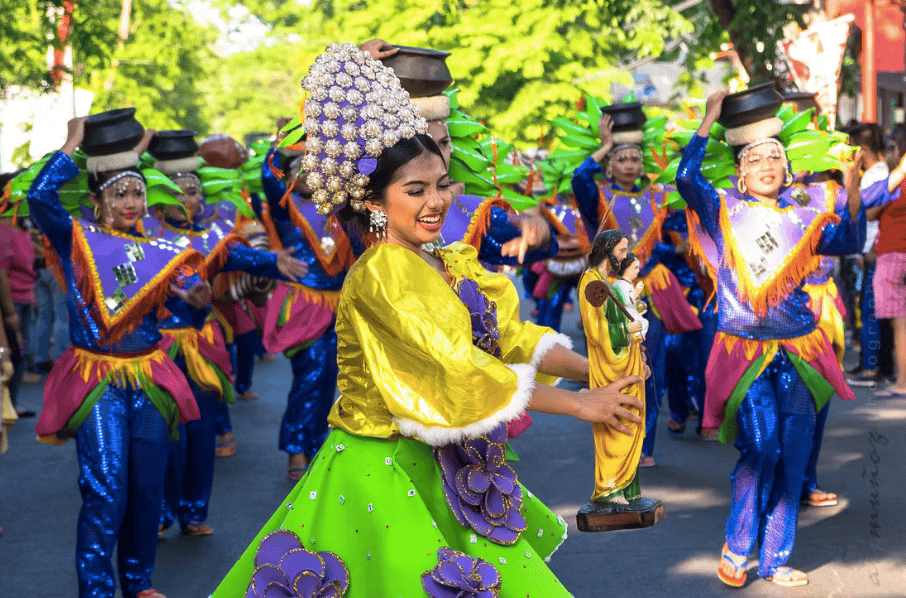
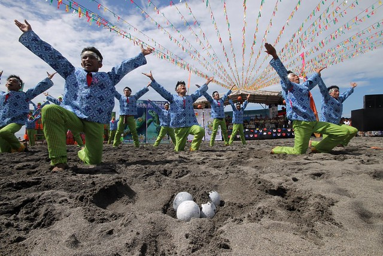
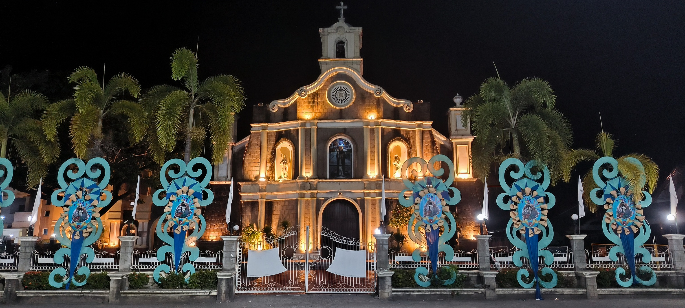
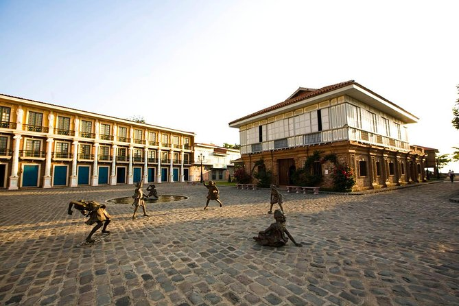

Festivals and Events
Bataan's festivals are a vivid reflection of its proud history, deep Catholic faith, and vibrant local culture. Each celebration is an invitation to witness the spirit of Bataaeño resilience and joy.
The Day of Valor commemorates the fall of Bataan and the heroism of Filipino and American soldiers during WWII. A solemn but powerful celebration featuring military ceremonies, wreath-laying at the National Shrine, and cultural presentations honoring the fallen.

A week-long celebration marking Bataan Day with street parades, cultural shows, beauty pageants, trade fairs, sporting events, and live music. The festival showcases Bataaeño pride, local crafts, cuisine, and the province's rich traditions in a colorful fiesta atmosphere.

Held during nesting season of the endangered sea turtles (pawikan), this eco-festival celebrates conservation efforts at Morong Beach. Visitors witness the magical spectacle of turtle hatchlings being released into the sea — an unforgettable event.

A vibrant tribute to the fishing communities of Mariveles, featuring fluvial processions, boat decorating contests, seafood fairs, and cultural dances celebrating the livelihood and traditions of Bataan's coastal communities at the southernmost tip of the peninsula.

The municipality of Hermosa celebrates its patron saint with an elaborate town fiesta featuring colorful street dancing, local delicacy contests, amusement rides, and religious processions — a beloved tradition that unites the whole community in joyful celebration.

A celebration of Bagac's rich history and natural beauty, including cultural heritage tours, indigenous craft demonstrations, beach clean-ups, and culinary showcases of local seafood. The week culminates in a grand cultural night honoring the town.